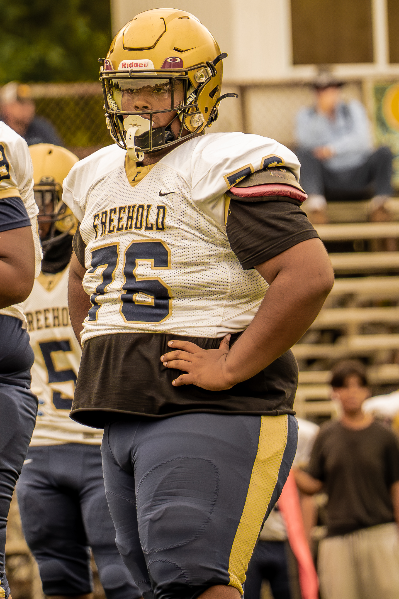
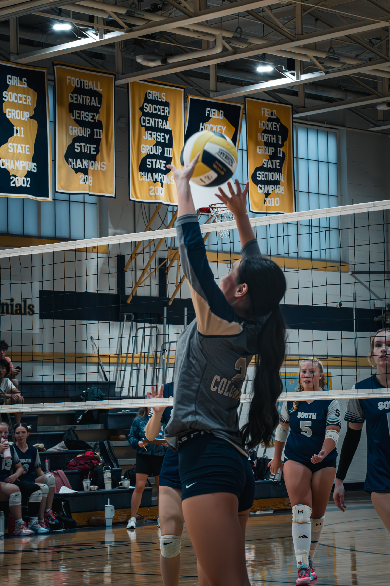
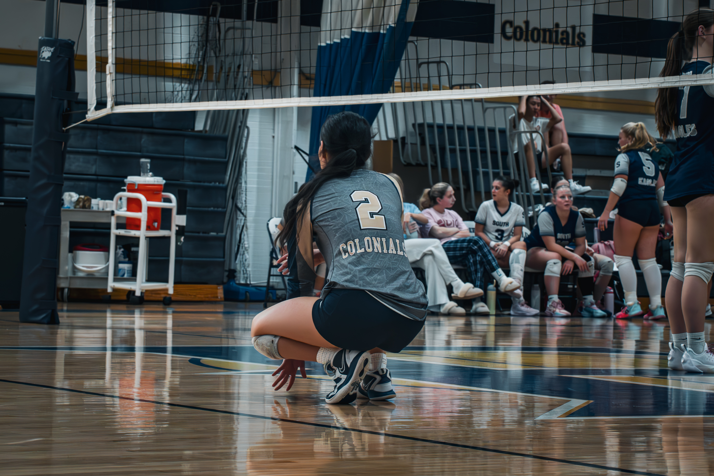
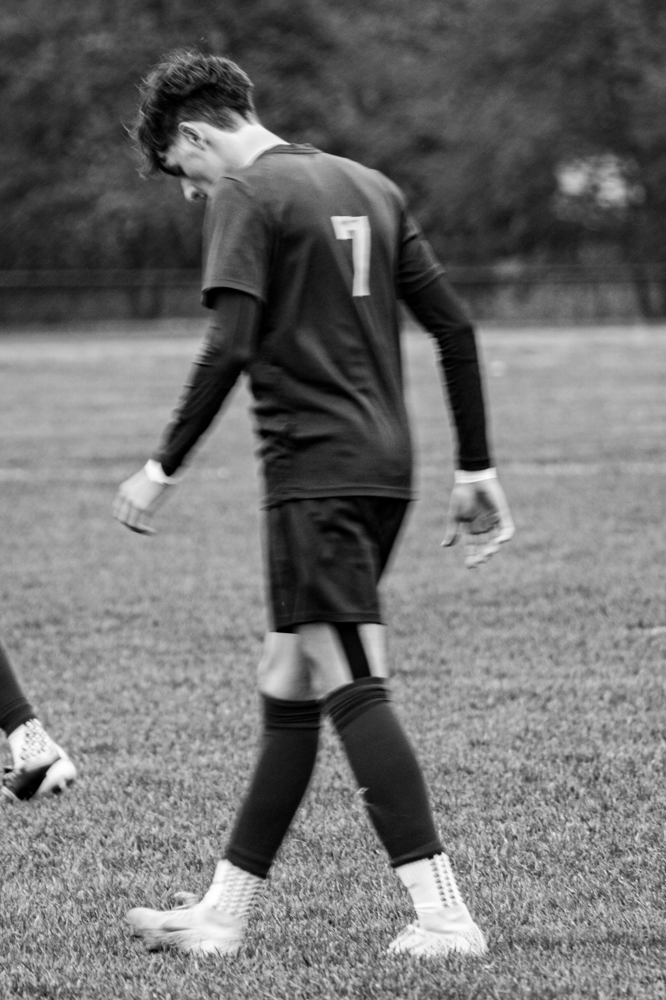
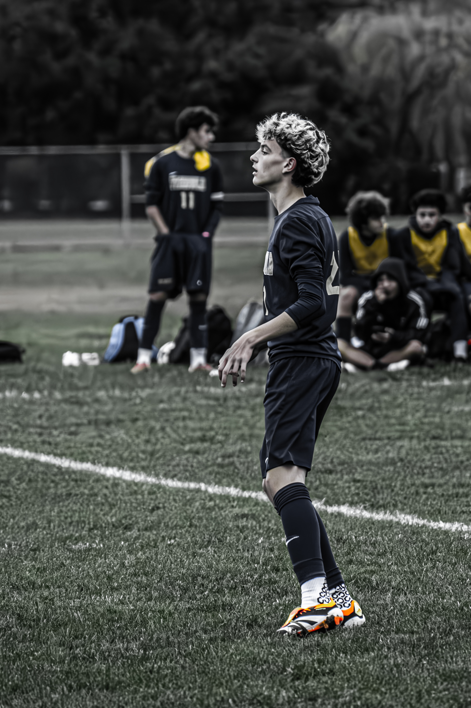

![<p>United States Paralympian Anastasia Pagonis swims at Farmingdale School District Aquatics Center on May 23, 2024 in Farmingdale, New York. Pagonis has autoimmune retinopathy which led her sight to decrease at the age of 11, and she lost her vision by the age of 14. She competed in the swimming competition at the Tokyo 2020 Paralympic Games where she won a gold and bronze medal respectively in the 400m Freestyle S11 and 200-meter Individual Medley S11. An S11 athlete is the most severe form of visual impairment. S11 swimmers all swim with blacked-out goggles to ensure a level playing field, blocking out all light so it's like swimming with a blindfold. She will be competing in the 400m Freestyle S11 at the 2024 Paralympic Games this summer in Paris, France. </p>](img/DSC02167.jpg)

![<p>Dennis Guerrero trains in his garage at his home on May 13, 2020 in Long Beach, New York. Dennis is an Amateur boxer and has competed in the New York City Golden Gloves. He also owns a CrossFit Gym called CrossFit Jetty in Oceanside, New York. He was training to compete in this year's Golden Gloves tournament but it has been cancelled due to the coronavirus pandemic. He also co owns a CrossFit Gym called CrossFit Jetty. His gym has been closed by New York Governor Andrew Cuomo since March 16th due to the coronavirus COVID-19 pandemic. Until the gyms are deemed safe to open he will continue to stay fit by training at home with the hope that he can box again later this year. </p>](img/DSC02365-2-Enhanced-NR.jpg)


 >
>





